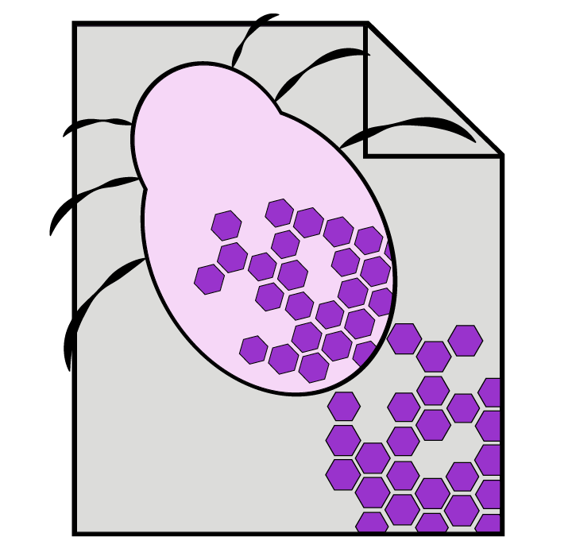
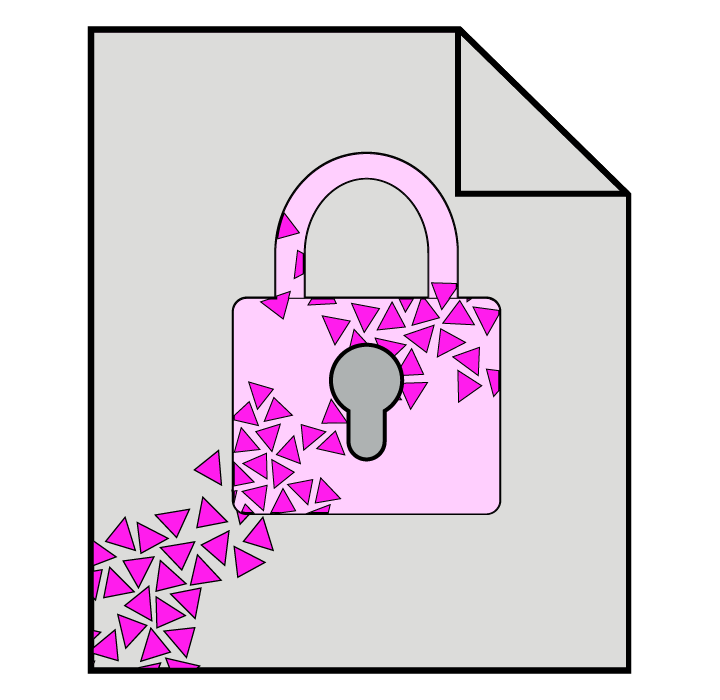
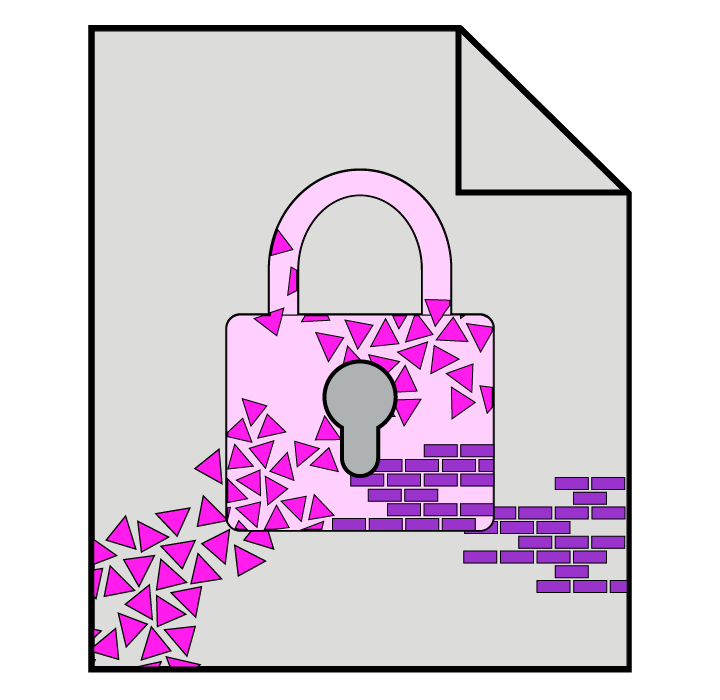
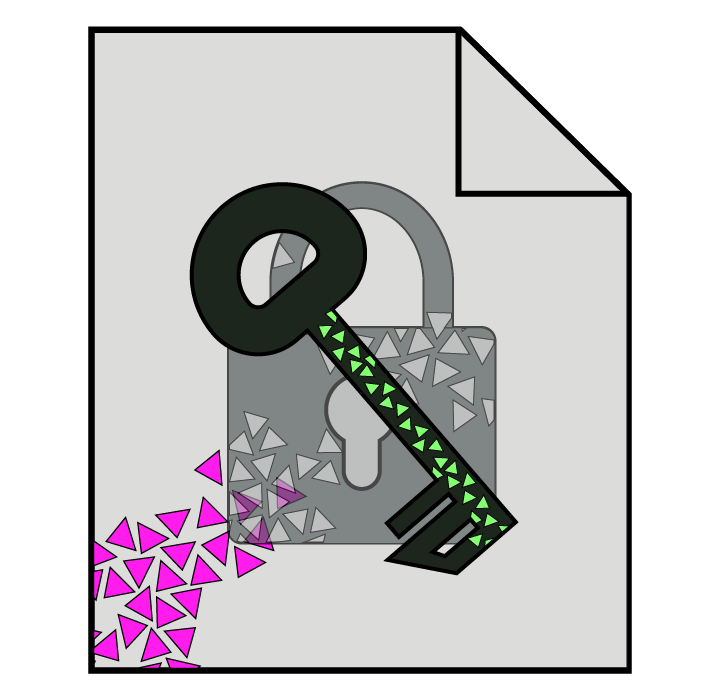

Over 350.000 new malicious programs are detected every day, built to exploit your devices. Ransomware attacks cause hospitals to shut down and inflict hundreds of millions in damages. Whilst malware has become more sophisticated, so have our defenders. There is a whole community out there fighting to keep our networks and PCs safe. Join me and ransomware researcher Fabian Wosar for a look into the world of anti-malware.
Fabian happily tells the story of how he got into malware analysis. At age 11, he got his first virus called Tequila.B. The idea that you could write a malicious program fascinated him. Next thing he knew, he was on his way to the library to get all the books on computer viruses he could get his hands on.
He quickly learned that to really understand viruses, he needed to learn how to code. He took up assembly, a low-level programming language, and started collecting viruses. He kept going from there and is now Chief Research Officer at Emsisoft, still fighting the fight against malware.
Virus, worm and trojan
The term malware is a collection for all malicious software. It comes in different forms, using different delivery methods. There is no one way of saying what malware does, but there are some distinct differences to be found. Malware is generally distinguished in three categories: viruses, worms and trojans.
Viruses are closest to the type of disease we know from nature. Much like viruses infecting living cells, the program attaches itself to software already existing on your computer. Once it has successfully infected a host, it will either spread itself around or do whatever it was programmed to do.

Worms are different from viruses in that they create entirely new files on your computer. This is the worm copying itself onto your system. They infect other systems by making more copies, this time away from the infected computer. Common methods they use are infiltrating the local computer network and mass-mailing itself.
The third and most common class of malware is the trojan (or trojan horse). This is malicious software disguised as a legitimate program. It tries to trick its victim in running the software. Once ran, the trojan will execute its malicious code.
There are also sub-classifications. If we look at trojans, we find that they are further divided based on the intent of the author. A trojan that gives the attacker full system access is called a backdoor. One that hides itself from anti-virus software is called a rootkit, and so on.
Fabian is well-known for breaking ransomware, a particularly nasty type of trojan, as it makes personal files inaccessible. It turns these files into its hostage by encrypting them and hiding the key. Ransomware is built around the concept of extorting money by selling you access to your own files.
Collecting ransomware
Before he can get to cracking ransomware and helping its victims, Fabian first needs to get his hands on some fresh samples. It’s a process of combining multiple approaches to find malware and seeing where something interesting turns up.
The first approach is to use legitimate channels for malware collection. Malware researchers join hands with technical support, which Fabian calls the front line. These are the people who see the first signs of something bad and pass it along in virtual communities. If they report someone being locked out of their files and having a ransom note, it’s very likely that they’ve encountered potential new ransomware.

Another source for ransomware is VirusTotal. This is a free service, currently maintained by Google, where anyone can upload a suspicious file. VirusTotal then uses a collection of anti-malware tools, among which Emsisoft, to scan for known malware. Researchers can also set up custom rules to scan files that give no matches. This allows them to filter the uploaded files for potential new malware.
Sometimes you don’t want to wait for the malware to come to you. You have to get pro-active. There is a black market for malware and, if you know where to look, you can buy it online. Malware researchers pretend to be buyers or sellers and infiltrate darknet communities Darknet communities are online communities purposefully not open to the public. where people hope to make money from malware. Getting your hands on new samples through these communities may help the researcher crack malware before it gets out to the public.
But it’s not a job done alone. Malware researchers are very keen on sharing the samples they find, as they hope others will do the same. Antivirus (AV) companies form a large community together. They have exchanges set up between AV companies through which the vast majority of malware samples are shared. For all the work Fabian and Emsisoft are doing to dig up new malware, there are many like them fighting that fight.
Creative searching
Finding malware samples doesn’t mean only using specific channels, it’s also learning about your enemy. There are 350.000 new malware samples uncovered every day, so if you can filter through that quickly you save a lot of time. One way to do so is to look at what certain kinds of malware have in common.
For one such commonality, Fabian explains that they’ve set up specific rules for detecting ransomware. Every ransomware is built around the idea of making money through extortion. The authors need to be able to communicate this to their victim, otherwise they wouldn’t know that they should pay, or how. Their tool: the ransom note.
Upon investigating these ransom notes they found similarities. By collecting a lot of them it was possible to create a statistical model that could detect if some text is likely to be a ransom note. If the model is certain enough that it has found one in a suspicious file, it gets flagged for analysis.
Other times, the solution looks a bit different. An especially nasty form of ransomware is the rogue. Rogue is short for rogue AV software, which is fake anti-malware. By misleading users that they have malware on their computer, they get them to pay to install this fake security software. In addition, the fake software itself is often malware as well.
When looking for commonalities in rogue AV software, Fabian and team found that they all have a website with which they advertise themselves. Many of these websites shared the same content. By setting up Google alerts, they were automatically notified whenever Google indexed these websites.
Finding malware and filtering through the seemingly unsurmountable pile of samples requires some creative thinking. Luckily there are often patterns to be discovered. Creative solutions to find malware greatly help in finding the ones you want to investigate.
Reverse engineering
Once you’ve got your sample, it’s time to break it. Each new piece of malware is its own puzzle. Sometimes it’s simple and the attacker makes a straightforward mistake. Other times there are extreme measures in place to obfuscate its inner workings. The process of going through the program and finding out what it does and how it’s made is called reverse engineering.
With a new malware sample in hand, Fabian’s first step is to look at its hex code. Hex code is the code fed directly into your computer, not designed to be readable by humans. With a so-called hex editor you can open up this code and look at what it says. Hex code will give away if it’s a PDF or an executable file without having to run it. It gives away information about the malware, because your computer needs to be told what kind of file it is.
After learning all he can from the hex code, it’s time to try and get a look at the source code of the malware. This is the human-readable version of program. This may be as easy as opening up the malware file, but its creator may have obfuscated the code.

There are two types of obfuscation: compression and encryption. Compression uses methods to reduce the size of the source code, whereas encryption encodes the source code so that only those with access can read it. This is much like ransomware does to your files, except that the key has to be accessible. To get past this, Fabian will run the file in a debugger. This allows him to execute the program step by step, stopping at the point it decompresses or decrypts itself. He then has access to readable source code.
With access to the source code, it’s time to find out what the malware does. The quickest way is to find which Windows functions it uses. Ransomware, for example, generally uses functions for cryptography and accessing files.
The next step is finding out why these functions are used. By going over the points in the program that use a specific function, you learn when and how it’s called upon. Then you which new parts of the program use these parts, and so on. This is done until you have working knowledge of what the program does.
Not always standard
The basics of reverse engineering malware are straightforward. Real-life cases on the other hand will require you to think creatively. Fabian has some interesting anecdotes to share.
A certain ransomware used a Content Delivery Network (CDN) A CDN helps speed up the internet by offering content from worldwide locations. It allows people to load websites faster because the server is closer to them. to deliver its encryption keys. It called upon an online script to generate a unique key. The problem is that CDNs are built for speed, not for dynamic content. The CDN saw the content as static instead of dynamic, so it cached the result. This meant that it saved the outcome of the script for a certain duration.
The cache for this script lasted 5 minutes. Every infected computer requesting a key within that timespan would get the same one. When Fabian investigated this malware, he discovered that the script was cached. He quickly set up his own script to pretend to be an infected computer and request a key every time it refreshed. This allowed him to create a complete database of decryption keys.
When the ransomware’s author found out, he decided to take a unique approach to salvage his profits. He contacted Fabian and offered him an easy way out. He would sell them the key database for a measly 10 Bitcoin. Fabian turned out not to be interested in a spare set.

Not every story is as wholesome. Being watched by the enemy can have unintended consequences. Fabian recalls the case of CryptoDefense, whose authors copied some Windows example code without knowing exactly what it did. When the ransomware was done, the example code would leave an unintended copy of the decryption key on the disk.
Malware researchers quickly found out and undid the damage. A large cybersecurity company put out a blog, pointing out the mistake and how avoid it. The malware authors read it and implemented the solution in a new version of their software. 24 hours later and now named CryptoWall, it became one of the biggest and most successful ransomware campaigns ever. With the unintentional help of malware researchers, it did an estimated damage of $325 million.
Sharing the fix
Rolling out the solution to malware can be as easy as updating the anti-malware software. Most generic cases require some new rules to detect and delete the files and that’s it. For ransomware, it can get complicated.
Detecting and removing the ransomware follows the same rules, but once a computer has been infected files will be encrypted. Breaking the malware alone may not be enough, Fabian will also have to figure out how to undo the encryption. If a malware author slips up and the keys can be recovered, this can be as easy as running the malware’s own decryption with the key.

When there are no keys to be found, it may require digging deep for mistakes. If the mistakes are big enough, a specialised program needs to be created to undo the encryption. Emsisoft makes these decrypters available for free, and they are not the only one. If you ever find yourself infected by ransomware, these are your best hope.
The problem is that not all mistakes are made equal. If the flaws in the malware are not big enough, Fabian won’t be able to break the encryption. Even with people like him fighting the good fight, it’s still possible they lose. These make their money when people give up and pay the ransom to get their files back.
Closing thoughts
The world of malware is fascinating. There are brilliant minds at work on both sides of the spectrum. Reading about the ongoing battle between malware authors and researchers is often fascinating. Some make stupid mistakes, others are like intricate puzzles. Knowing experts like Fabian are out there also inspires confidence.
It’s important not to forget your own personal computer hygiene. It’s not unlikely that you will get infected by a virus at some point. I’ve seen and experienced how difficult it can be to recover lost files. Don’t wait until you lose your files and photos before you take action. Check out some tips on bleepingcomputer.com.
I want to thank Fabian Wosar and Brett Callow from Emsisoft for making this interview possible. I got to ask some interesting questions and learned a lot. Check out Emsisoft and their free Ransomware Decrypters. If you want to see more content like this, consider bookmarking or subscribing to the newsletter.

Comments
Enabling comments requires your consent for Disqus to place cookies. You can review their privacy policy here.